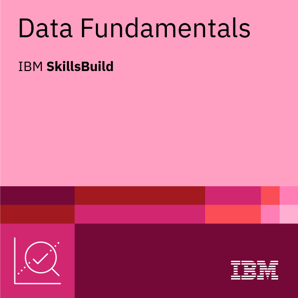
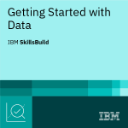

> ./initialize --user aryan
ARYAN VERMA
I'm into
Cybersecurity and ethical hacking, based in Delhi. I like understanding how systems work underneath — and how they can be made harder to break.
Terminal 端末
Born of 1s & 0s — 「零と壱より生まれる」. The shell turns up in the corner of the screen here and follows you down the page. Type in it, or fire a command from this list.
21 commands. ↹ completes,
↑ walks history,
esc closes the window. Start with help.
About 私について
The short version.
私 Hi, I'm Aryan — a curious learner, always looking for a reason to pull something apart and find out how it actually works.
I'm particularly interested in cybersecurity and ethical hacking: understanding how systems behave, where they give, and how they can be made harder to break. Most of that curiosity ends up in a terminal — reading traffic in Wireshark, mapping a host with Nmap, or writing a small Python tool because the manual version got tedious.
Alongside that I'm working through data analysis and system design, while reading for a B.Tech at ADGIPS (GGSIPU) in Delhi. Right now I'm looking for internships where I can put this to work on real systems.
- Based inDelhi, India · IST (UTC+5:30)
- FocusCybersecurity, ethical hacking
- Also learningData analysis, system design
- StatusOpen to internships
- LanguagesEnglish, Hindi
Skills 技術
What I reach for. No percentages — those are unverifiable; the work below is the evidence.
攻Security & Recon
系Systems
基Backend
構Frontend
知Data & AI
Selected Work 作品
Things I built and actually finished.
Security Scanner
A CLI — secscan — that points three kinds of check at one target and reconciles the results: dependency CVEs from OSV.dev, source patterns like eval and hardcoded keys, and live-site TLS, headers, cookies and exposed files. Passive by default; the intrusive probes stay off until you both ask for them and confirm you’re authorized to test the host.
- Python
- asyncio
- httpx
- cryptography
- pytest
Retail Customer Segmentation
The IBM SkillsBuild × BharatCares capstone — an end-to-end analysis of 1,067,371 UCI Online Retail II transaction lines in a single notebook: a cleaning audit that accounts for every row it drops, RFM segmentation cross-checked against K-Means, CLV estimation and cohort retention. It identifies 683 high-value accounts, £1.69M of revenue, that had stopped ordering.
- Python
- pandas
- NumPy
- scikit-learn
- Matplotlib
- Jupyter
File Integrity Checker
A lightweight file integrity monitor. Take a trusted baseline once, run a check whenever you need one, and it names exactly what was modified, added or deleted — no manual diffing, no guesswork.
- Python
- JSON
- CLI
- Git
अर्थNiti
Smart India Hackathon 2026 — an AI-driven hyper-local business advisory and financial structuring assistant for rural micro-entrepreneurs. I built the backend: the API surface and the integrations behind it.
- Python
- FastAPI
- React
- Tailwind CSS
- Vite
Prototype phase · repository private
More on GitHub↗
Path 経歴
Education and experience, most recent first.
-
Aug — Sep 2026
Data Analytics Intern
IBM SkillsBuild × BharatCares — Remote
Worked with real-world datasets and learned to apply analytical thinking to them — which is where data analytics and AI stopped being two separate subjects for me.
-
2026
Backend — Lead
Smart India Hackathon — अर्थNiti
Problem statement: AI-driven hyper-local business advisory and financial structuring assistant for rural micro-entrepreneurs.
-
2025 — 2029
B.Tech — Information Technology
Dr Akhilesh Das Gupta Institute of Professional Studies (ADGIPS), GGSIPU — Delhi, India
CGPA 9.04.
Certifications 認定
-

-

Every certificate above is downloadable. Badges also verifiable on Credly↗
Get in touch 連絡
Internships, freelance, or just to say hello. I reply.